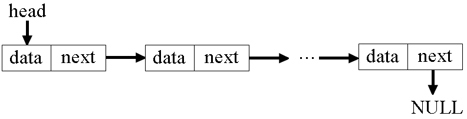

Теоретичні відомості#
Список — це послідовність структур, кожна з яких містить посилання, яке зв’язує її з іншою структурою. Для організації списків використовують структури, які складаються з двох частин — інформаційної та допоміжної:
інформаційна частина містить інформацію, яка підлягає опрацюванню;
додаткова частина містить указівники на наступну чи попередню структури списку.
Елемент списку називають вузлом (node). Таким чином, список — це ланцюжок зв’язаних вузлів, від першого до останнього. Останній вузол не посилається на наступний елемент, тому його поле посилання має значення NULL. За однозв’язним списком можна рухатися тільки в одному напрямку — від заголовкового (першого, root) вузла до останнього.
У даній лабораторній роботі для реалізації списку використовуватимемо структуру, яку називають зв’язним списком (linked list). Кожний його вузол містить поле даних data і вказівник на наступний вузол next (рисунок 7.1).

Рисунок 7.1 – Структура зв’язного списку
Перший елемент списку називаються головою (head), у роботі адресуватимемо його вказівником head. Останній елемент називаються хвостом (tail). Поле next хвоста списку має значення NULL. Програми, які працюють із таким списком, послідовно проходять вузлами, використовуючи вказівники next, починаючи з голови до хвоста, ознакою якого є next == NULL.
На відміну від масиву, зв’язний список не вимагає безперервної області пам’яті: вузли можуть розташовуватися в ній довільним чином. Найчастіше вузли зв’язного списку є динамічними об’єктами, які створюють за потребою за допомогою функцій malloc() чи calloc() і знищують за допомогою функції free().
Процедури додавання й видалення вузлів зв’язного списку не вимагають копіювання даних, а обмежуються тільки зміною вказівників. Вставка вузла у зв’язний список зводиться до «налаштування» вказівників next двох вузлів: вставленого й попереднього. Видалення вузла полягає лише в зміні поля next вузла, попереднього тому вузлу, що видаляється.
Розгляньмо спосіб опису структури однозв’язного списку:
struct list{
char data[20];
struct list* next; /*указівник на структуру*/
};
Для опису вказівника використовується ще не описаний об’єкт struct list* next, який слугуватиме посиланням на наступний елемент списку. Найостанніший вузол у списку нікуди не вказує, тобто поле next повинно мати значення NULL.
Виділяють типові операції над списками:
додавання вузла в початок списку;
видалення вузла з початку списку;
додавання вузла в довільне місце списку, відмінне від початку (наприклад, після вузла, указівник на який задано);
видалення вузла з довільного місця списку, відмінного від початку (наприклад, після вузла, указівник на який задано);
перевірка, чи порожній список;
очищення списку;
друк списку.
Цей набір операцій рекомендується реалізувати у вигляді окремого модуля. Підключивши цей модуль, можна вирішити більшість типових завдань.
Приклад 7.1#
У нижченаведеній програмі продемонстровано створення й перегляд однозв’язного списку.
#include <stdio.h>
#include <stdlib.h>
typedef struct list {
char data[20];
struct list* next;
} list;
/* функція створення списку */
struct list* create(void);
/* функція перегляду списку */
void show(list* head);
/* функція звільнення пам'яті */
void free_list(list* head);
int main(void)
{
list* head = create();
show(head);
free_list(head);
}
struct list* create(void)
{
/* змінна адреси голови списку */
list* head;
/* р - указівник на поточну структуру,
prev - указівник на попередню структуру */
list *p, *prev;
char ch;
do {
p = (list*) malloc(sizeof(list));
if (!p) exit(1);
// якщо це перший запис - це голова
if (!head)
head = prev = p;
printf("\nУведіть ім'я: ");
scanf("%s", p->data);
if (prev) {
prev->next = p;
}
prev = p;
printf("Закінчити? y/n");
scanf(" %c", &ch);
} while (ch != 'y');
p->next = NULL;
return head;
}
void show(list* head)
{
// указівник, яким проходитимемо список
list* p = head;
while (p) {
/* поки не кінець списку */
printf("\nІм'я: %s", p->data);
/* переходимо на наступний елемент списку */
p = p->next;
}
}
void free_list(list* head)
{
list *p;
while (head) {
p = head;
head = head->next;
free(p);
}
}
Добрий приклад роботи зі структурою списку представлено в [2].